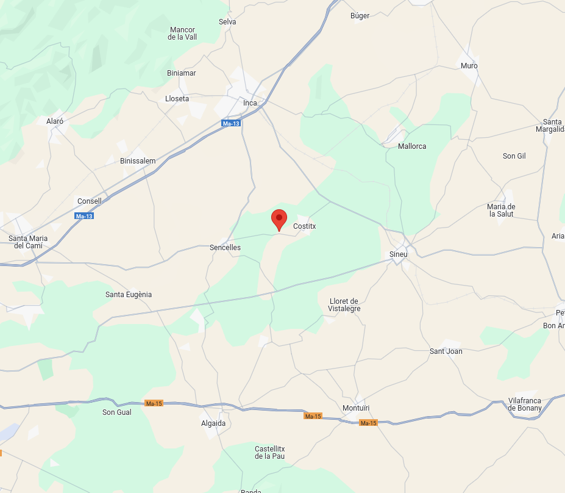

Descripció
Són Corró és un jaciment arqueològic, concretament un santuari, situat al municipi de Costitx, a l'illa de Mallorca, Països Catalans, i datat de l'època posttalaiòtica. Es troba al quilòmetre 2,8 de la carretera de Sencelles a Costitx, en una elevació suau del terreny.
Ubicació
Es troba al municipi de Costitx a Mallorca

Imatges